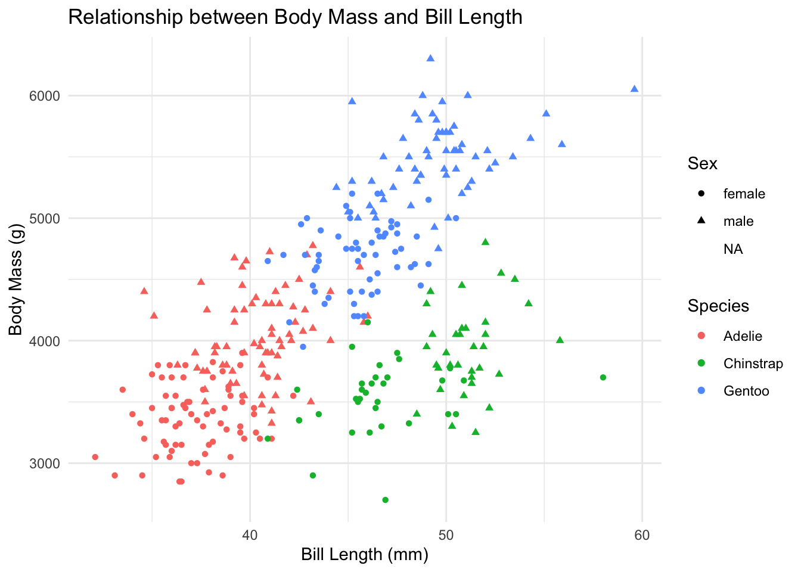
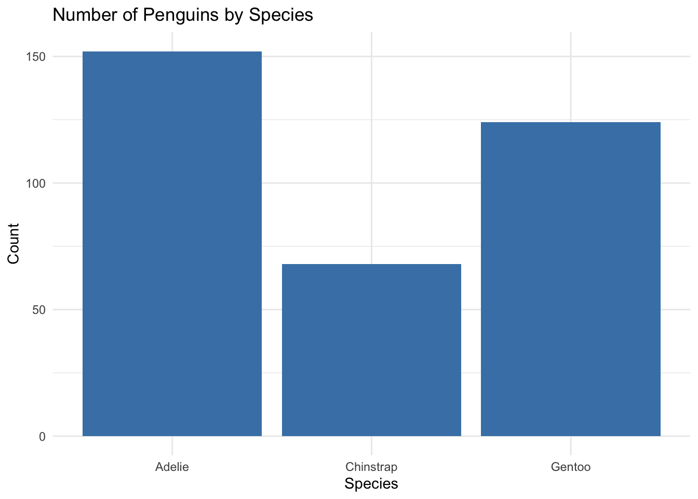
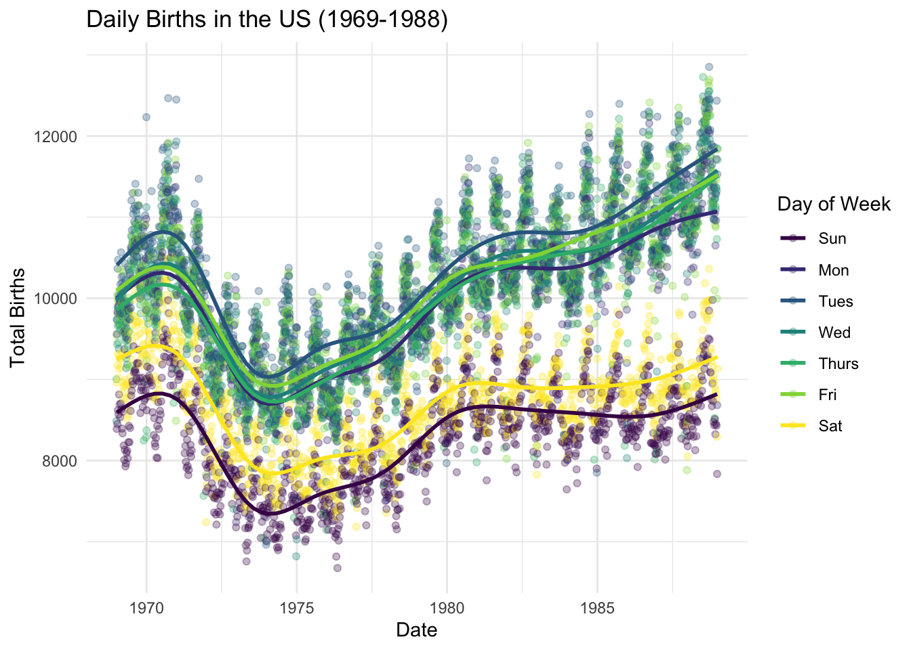
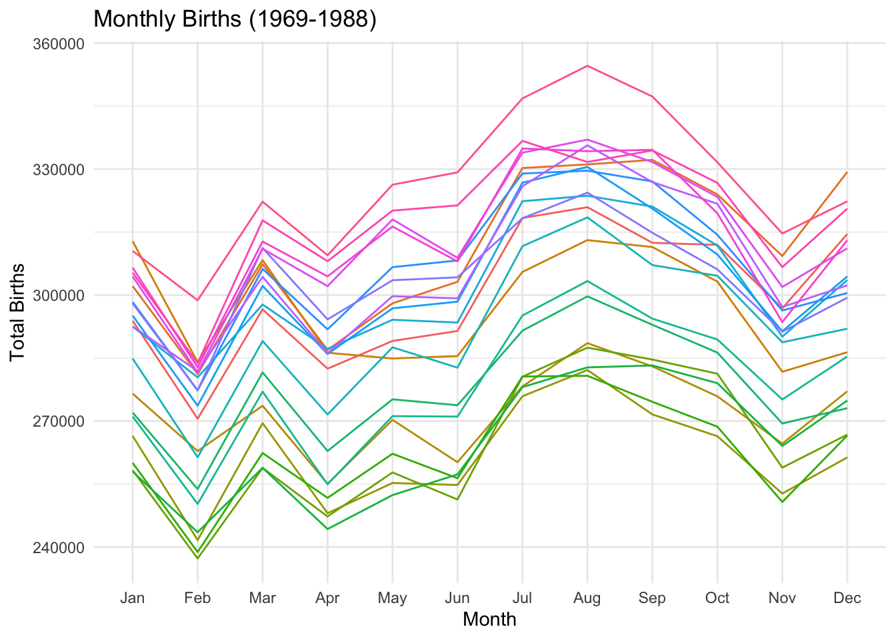
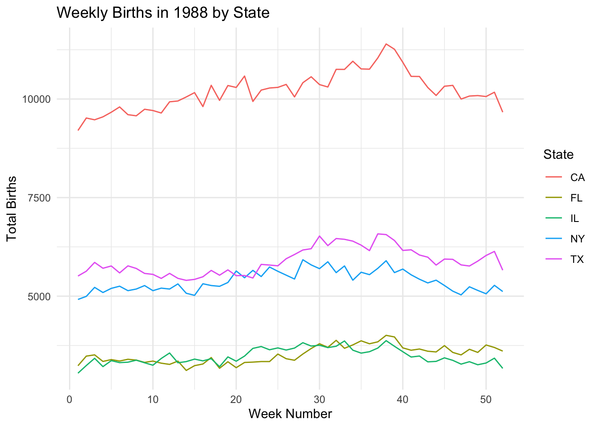
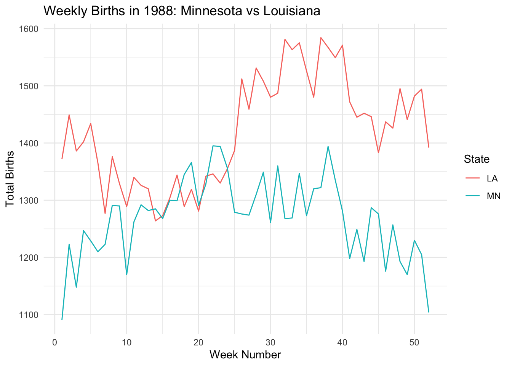

Below is the visual representation of the data science process we saw earlier. Which stage are we in currently?
We are in the wrangling stage of the data science process.
Recall that wrangling is important. It is much of what we spend our efforts on in Data Science. There are lots of steps, hence R functions, that can go into data wrangling. But we can get far with the following 6 wrangling verbs:
verb
action
arrange
arrange the rows according to some column
filter
filter out or obtain a subset of the rows
select
select a subset of columns
mutate
mutate or create a column
summarize
calculate a numerical summary of a column
group_by
group the rows by a specified column
16.3.2 Example 1: Single Verb
Let’s start by working with some TidyTuesday data on penguins. This data includes information about penguins’ flippers (“arms”) and bills (“mouths” or “beaks”). Let’s import this using read_csv(), a function in the tidyverse package. For the most part, this is similar to read.csv(), though read_csv() can be more efficient at importing large datasets.
library(tidyverse)
── Attaching core tidyverse packages ──────────────────────── tidyverse 2.0.0 ──
✔ dplyr 1.1.4 ✔ readr 2.1.5
✔ forcats 1.0.0 ✔ stringr 1.5.1
✔ ggplot2 3.5.2 ✔ tibble 3.2.1
✔ lubridate 1.9.4 ✔ tidyr 1.3.1
✔ purrr 1.0.4
── Conflicts ────────────────────────────────────────── tidyverse_conflicts() ──
✖ dplyr::filter() masks stats::filter()
✖ dplyr::lag() masks stats::lag()
ℹ Use the conflicted package (<http://conflicted.r-lib.org/>) to force all conflicts to become errors
Rows: 344 Columns: 8
── Column specification ────────────────────────────────────────────────────────
Delimiter: ","
chr (3): species, island, sex
dbl (5): bill_length_mm, bill_depth_mm, flipper_length_mm, body_mass_g, year
ℹ Use `spec()` to retrieve the full column specification for this data.
ℹ Specify the column types or set `show_col_types = FALSE` to quiet this message.
# Check it outhead(penguins)
# A tibble: 6 × 8
species island bill_length_mm bill_depth_mm flipper_length_mm body_mass_g
<chr> <chr> <dbl> <dbl> <dbl> <dbl>
1 Adelie Torgersen 39.1 18.7 181 3750
2 Adelie Torgersen 39.5 17.4 186 3800
3 Adelie Torgersen 40.3 18 195 3250
4 Adelie Torgersen NA NA NA NA
5 Adelie Torgersen 36.7 19.3 193 3450
6 Adelie Torgersen 39.3 20.6 190 3650
# ℹ 2 more variables: sex <chr>, year <dbl>
16.3.3 Check Understanding
Construct a plot that allows us to examine how the relationship between body mass and bill length varies by species and sex.
ggplot(penguins, aes(x = bill_length_mm, y = body_mass_g, color = species, shape = sex)) +geom_point() +labs(title ="Relationship between Body Mass and Bill Length",x ="Bill Length (mm)",y ="Body Mass (g)",color ="Species",shape ="Sex") +theme_minimal()
Warning: Removed 11 rows containing missing values or values outside the scale range
(`geom_point()`).

16.3.4 Check Understanding
Use the 6 wrangling verbs to address each task in the code chunk below. You can tack on |> head() to print out just 6 rows to keep your rendered document manageable. Most of these require just 1 verb.
# Get data on only Adelie penguins that weigh more than 4700gpenguins |>filter(species =="Adelie", body_mass_g >4700) |>head()
# A tibble: 2 × 8
species island bill_length_mm bill_depth_mm flipper_length_mm body_mass_g
<chr> <chr> <dbl> <dbl> <dbl> <dbl>
1 Adelie Biscoe 41 20 203 4725
2 Adelie Biscoe 43.2 19 197 4775
# ℹ 2 more variables: sex <chr>, year <dbl>
# Get data on penguin body mass only# Show just the first 6 rowspenguins |>select(body_mass_g) |>head()
# A tibble: 6 × 1
body_mass_g
<dbl>
1 3750
2 3800
3 3250
4 NA
5 3450
6 3650
# Sort the penguins from smallest to largest body mass# Show just the first 6 rowspenguins |>arrange(body_mass_g) |>head()
# Calculate the average body mass across all penguins# Note: na.rm = TRUE removes the NAs from the calculationpenguins |>summarize(mean_mass =mean(body_mass_g, na.rm =TRUE))
# A tibble: 1 × 1
mean_mass
<dbl>
1 4202.
# Calculate the average body mass by speciespenguins |>group_by(species) |>summarize(mean_mass =mean(body_mass_g, na.rm =TRUE))
# A tibble: 3 × 2
species mean_mass
<chr> <dbl>
1 Adelie 3701.
2 Chinstrap 3733.
3 Gentoo 5076.
# Create a new column that records body mass in kilograms, not grams# NOTE: there are 1000 g in 1 kg# Show just the first 6 rowspenguins |>mutate(body_mass_kg = body_mass_g /1000) |>head()
# A tibble: 6 × 9
species island bill_length_mm bill_depth_mm flipper_length_mm body_mass_g
<chr> <chr> <dbl> <dbl> <dbl> <dbl>
1 Adelie Torgersen 39.1 18.7 181 3750
2 Adelie Torgersen 39.5 17.4 186 3800
3 Adelie Torgersen 40.3 18 195 3250
4 Adelie Torgersen NA NA NA NA
5 Adelie Torgersen 36.7 19.3 193 3450
6 Adelie Torgersen 39.3 20.6 190 3650
# ℹ 3 more variables: sex <chr>, year <dbl>, body_mass_kg <dbl>
16.3.5 Check Understanding
How many penguins of each species do we have? Create a viz that addresses this question.
ggplot(penguins, aes(x = species)) +geom_bar(fill ="steelblue") +labs(title ="Number of Penguins by Species",x ="Species",y ="Count") +theme_minimal()

16.3.6 Check Understanding
Can we use the 6 verbs to calculate exactly how many penguins in each species?
# A tibble: 3 × 2
species count
<chr> <int>
1 Adelie 152
2 Chinstrap 68
3 Gentoo 124
16.3.7 count verb
The count() verb provides a handy shortcut!
penguins |>count(species)
# A tibble: 3 × 2
species n
<chr> <int>
1 Adelie 152
2 Chinstrap 68
3 Gentoo 124
16.3.8 Example 2: Multiple Verbs
16.3.8.1 Check Understanding
Let’s practice combining some verbs. For each task:
Translate the prompt into our 6 verbs. That is, think before you type.
Build your code line by line. It’s important to understand what’s being piped into each function!
Ask what you can rearrange and still get the same result.
Read your final code like a paragraph / a conversation. Would another person be able to follow your logic?
# Sort Gentoo penguins from biggest to smallest with respect to their # bill length in cm (there are 10 mm in a cm)penguins |>filter(species =="Gentoo") |>mutate(bill_length_cm = bill_length_mm /10) |>arrange(desc(bill_length_cm))
# Sort the species from smallest to biggest with respect to their # average bill length in cmpenguins |>group_by(species) |>summarize(avg_bill_length_cm =mean(bill_length_mm, na.rm =TRUE) /10) |>arrange(avg_bill_length_cm)
# A tibble: 3 × 2
species avg_bill_length_cm
<chr> <dbl>
1 Adelie 3.88
2 Gentoo 4.75
3 Chinstrap 4.88
16.3.9 Example 3: Interpret Code
Let’s practice reading and making sense of somebody else’s code. What do you think this produces?
How many columns? Rows?
What are the column names?
What’s represented in each row?
Once you’ve thought about it, put the code inside a chunk and run it!
penguins |>filter(species =="Chinstrap") |>group_by(sex) |>summarize(min =min(body_mass_g, na.rm =TRUE), max =max(body_mass_g, na.rm =TRUE)) |>mutate(range = max - min)
# A tibble: 2 × 4
sex min max range
<chr> <dbl> <dbl> <dbl>
1 female 2700 4150 1450
2 male 3250 4800 1550
16.4 9.2 Exercises Part 1: Same Verbs, New Tricks
16.4.1 Exercise 1: More Filtering
Recall the “logical comparison operators” we can use to filter() our data:
symbol
meaning
==
equal to
!=
not equal to
>
greater than
>=
greater than or equal to
<
less than
<=
less than or equal to
%in% c(, )
a list of multiple values
16.4.1.1 Part a
# Create a dataset with just Adelie and Chinstrap using %in%# Pipe this into `count(species)` to confirm that you only have these 2 speciespenguins |>filter(species %in%c("Adelie", "Chinstrap")) |>count(species)
# A tibble: 2 × 2
species n
<chr> <int>
1 Adelie 152
2 Chinstrap 68
# Create a dataset with just Adelie and Chinstrap using !=# Pipe this into `count(species)` to confirm that you only have these 2 speciespenguins |>filter(species !="Gentoo") |>count(species)
# A tibble: 2 × 2
species n
<chr> <int>
1 Adelie 152
2 Chinstrap 68
16.4.1.2 Part b
Notice that some of our penguins have missing (NA) data on some values:
head(penguins)
# A tibble: 6 × 8
species island bill_length_mm bill_depth_mm flipper_length_mm body_mass_g
<chr> <chr> <dbl> <dbl> <dbl> <dbl>
1 Adelie Torgersen 39.1 18.7 181 3750
2 Adelie Torgersen 39.5 17.4 186 3800
3 Adelie Torgersen 40.3 18 195 3250
4 Adelie Torgersen NA NA NA NA
5 Adelie Torgersen 36.7 19.3 193 3450
6 Adelie Torgersen 39.3 20.6 190 3650
# ℹ 2 more variables: sex <chr>, year <dbl>
16.4.1.2.1 Handling NA Values
There are many ways to handle missing data. The right approach depends upon your research goals. A general rule is: Only get rid of observations with missing data if they’re missing data on variables you need for the specific task at hand!
16.4.1.2.1.1 Example 1
Suppose our research focus is just on body_mass_g. Two penguins are missing this info:
# NOTE the use of is.na()penguins |>summarize(sum(is.na(body_mass_g)))
# A tibble: 1 × 1
`sum(is.na(body_mass_g))`
<int>
1 2
Let’s define a new dataset that removes these penguins:
# NOTE the use of is.na()penguins_w_body_mass <- penguins |>filter(!is.na(body_mass_g))# Compare the number of penguins in this vs the original datanrow(penguins_w_body_mass)
[1] 342
nrow(penguins)
[1] 344
Note that some penguins in penguins_w_body_mass are missing info on sex, but we don’t care since that’s not related to our research question:
penguins_w_body_mass |>summarize(sum(is.na(sex)))
# A tibble: 1 × 1
`sum(is.na(sex))`
<int>
1 9
16.4.1.2.1.2 Example 2
In the very rare case that we need complete information on every variable for the specific task at hand, we can use na.omit() to get rid of any penguin that’s missing info on any variable:
penguins_complete <- penguins |>na.omit()# How many penguins did this eliminate?nrow(penguins_complete)
[1] 333
nrow(penguins)
[1] 344
16.4.1.3 Part c
Explain why we should only use na.omit() in extreme circumstances.
We should only use na.omit() in extreme circumstances because it removes entire observations (rows) that have ANY missing values in ANY columns, which can drastically reduce your dataset size and potentially introduce bias. When we remove data, we’re making assumptions about the missing values that may not be valid. It’s better to only remove observations with missing values in specific columns that are directly related to the analysis at hand, rather than eliminating all incomplete observations.
16.4.2 Exercise 2: More Selecting
Being able to select() only certain columns can help simplify our data. This is especially important when we’re working with lots of columns (which we haven’t done yet). It can also get tedious to type out every column of interest. Here are some shortcuts:
“-” removes a given variable and keeps all others (e.g. select(-island))
starts_with(“”), ends_with(””), or contains(“___”) selects only the columns that either start with, end with, or simply contain the given string of characters
Use these shortcuts to create the following datasets.
# Use a shortcut to keep everything but the year and island variablespenguins |>select(-year, -island) |>head()
# A tibble: 6 × 6
species bill_length_mm bill_depth_mm flipper_length_mm body_mass_g sex
<chr> <dbl> <dbl> <dbl> <dbl> <chr>
1 Adelie 39.1 18.7 181 3750 male
2 Adelie 39.5 17.4 186 3800 female
3 Adelie 40.3 18 195 3250 female
4 Adelie NA NA NA NA <NA>
5 Adelie 36.7 19.3 193 3450 female
6 Adelie 39.3 20.6 190 3650 male
# Use a shortcut to keep only species and the penguin characteristics measured in mmpenguins |>select(species, ends_with("_mm")) |>head()
# A tibble: 6 × 4
species bill_length_mm bill_depth_mm flipper_length_mm
<chr> <dbl> <dbl> <dbl>
1 Adelie 39.1 18.7 181
2 Adelie 39.5 17.4 186
3 Adelie 40.3 18 195
4 Adelie NA NA NA
5 Adelie 36.7 19.3 193
6 Adelie 39.3 20.6 190
# Use a shortcut to keep only species and bill-related measurementspenguins |>select(species, starts_with("bill")) |>head()
# A tibble: 6 × 3
species bill_length_mm bill_depth_mm
<chr> <dbl> <dbl>
1 Adelie 39.1 18.7
2 Adelie 39.5 17.4
3 Adelie 40.3 18
4 Adelie NA NA
5 Adelie 36.7 19.3
6 Adelie 39.3 20.6
# Use a shortcut to keep only species and the length-related characteristicspenguins |>select(species, contains("length")) |>head()
# A tibble: 6 × 3
species bill_length_mm flipper_length_mm
<chr> <dbl> <dbl>
1 Adelie 39.1 181
2 Adelie 39.5 186
3 Adelie 40.3 195
4 Adelie NA NA
5 Adelie 36.7 193
6 Adelie 39.3 190
16.4.3 Exercise 3: Arranging, Counting, & Grouping by Multiple Variables
We’ve done examples where we need to filter() by more than one variable, or select() more than one variable. Use your intuition for how we can arrange(), count(), and group_by() more than one variable.
# Change this code to sort the penguins by species, and then island name# NOTE: The first row should be an Adelie penguin living on Biscoe islandpenguins |>arrange(species, island) |>head()
# Change this code to count the number of male/female penguins observed for each speciespenguins |>count(species, sex)
# A tibble: 8 × 3
species sex n
<chr> <chr> <int>
1 Adelie female 73
2 Adelie male 73
3 Adelie <NA> 6
4 Chinstrap female 34
5 Chinstrap male 34
6 Gentoo female 58
7 Gentoo male 61
8 Gentoo <NA> 5
# Change this code to calculate the average body mass by species and sexpenguins |>group_by(species, sex) |>summarize(mean =mean(body_mass_g, na.rm =TRUE))
`summarise()` has grouped output by 'species'. You can override using the
`.groups` argument.
# A tibble: 8 × 3
# Groups: species [3]
species sex mean
<chr> <chr> <dbl>
1 Adelie female 3369.
2 Adelie male 4043.
3 Adelie <NA> 3540
4 Chinstrap female 3527.
5 Chinstrap male 3939.
6 Gentoo female 4680.
7 Gentoo male 5485.
8 Gentoo <NA> 4588.
16.4.4 Exercise 4: Dates
Before some wrangling practice, let’s explore another important concept: working with or mutating date variables. Dates are a whole special object type or class in R that automatically respect the order of time.
# Get today's datetoday <-Sys.Date()today
[1] "2025-05-05"
# Check out the class of this objectclass(today)
[1] "Date"
The lubridate package inside tidyverse contains functions that can extract various information from dates. Let’s learn about some of the most common functions by applying them to today. For each, make a comment on what the function does
library(lubridate)year(today) # Extracts the year from the date
[1] 2025
# What do these lines produce / what's their difference?month(today) # Extracts the month as a number (1-12)
[1] 5
month(today, label =TRUE) # Extracts the month as a labeled factor (Jan-Dec)
[1] May
12 Levels: Jan < Feb < Mar < Apr < May < Jun < Jul < Aug < Sep < ... < Dec
# What does this number mean?week(today) # Returns the week number of the year (1-53)
[1] 18
# What do these lines produce / what's their difference?mday(today) # Returns the day of the month (1-31)
[1] 5
yday(today) # Returns the day of the year (1-366)
[1] 125
# What do these lines produce / what's their difference?wday(today) # Returns the day of the week as a number (1=Sunday, 7=Saturday)
[1] 2
wday(today, label =TRUE) # Returns the day of the week as a labeled factor
[1] Mon
Levels: Sun < Mon < Tue < Wed < Thu < Fri < Sat
# What do the results of these 2 lines tell us?today >=ymd("2024-02-14") # Checks if today is on or after Feb 14, 2024
[1] TRUE
today <ymd("2024-02-14") # Checks if today is before Feb 14, 2024
[1] FALSE
16.5 9.3 Exercises Part 2: Application
The remaining exercises are similar to some of those on the homework. Hence, the solutions are not provided. Let’s apply these ideas to the daily Birthdays dataset in the mosaic package.
library(mosaic)
Registered S3 method overwritten by 'mosaic':
method from
fortify.SpatialPolygonsDataFrame ggplot2
The 'mosaic' package masks several functions from core packages in order to add
additional features. The original behavior of these functions should not be affected by this.
Attaching package: 'mosaic'
The following object is masked from 'package:Matrix':
mean
The following objects are masked from 'package:dplyr':
count, do, tally
The following object is masked from 'package:purrr':
cross
The following object is masked from 'package:ggplot2':
stat
The following objects are masked from 'package:stats':
binom.test, cor, cor.test, cov, fivenum, IQR, median, prop.test,
quantile, sd, t.test, var
The following objects are masked from 'package:base':
max, mean, min, prod, range, sample, sum
data("Birthdays")head(Birthdays)
state year month day date wday births
1 AK 1969 1 1 1969-01-01 Wed 14
2 AL 1969 1 1 1969-01-01 Wed 174
3 AR 1969 1 1 1969-01-01 Wed 78
4 AZ 1969 1 1 1969-01-01 Wed 84
5 CA 1969 1 1 1969-01-01 Wed 824
6 CO 1969 1 1 1969-01-01 Wed 100
Birthdays gives the number of births recorded on each day of the year in each state from 1969 to 1988. We can use our wrangling skills to understand some drivers of daily births. Putting these all together can be challenging! Remember the following ways to make tasks more manageable:
Translate the prompt into our 6 verbs (and count()). That is, think before you type.
Build your code line by line. It’s important to understand what’s being piped into each function!
16.5.1 Exercise 5: Warming up
# How many days of data do we have for each state?Birthdays |>count(state)
state n
1 AK 7306
2 AL 7312
3 AR 7310
4 AZ 7310
5 CA 7325
6 CO 7305
7 CT 7312
8 DC 7311
9 DE 7307
10 FL 7307
11 GA 7314
12 HI 7306
13 IA 7306
14 ID 7306
15 IL 7314
16 IN 7311
17 KS 7311
18 KY 7313
19 LA 7309
20 MA 7315
21 MD 7311
22 ME 7309
23 MI 7323
24 MN 7315
25 MO 7309
26 MS 7310
27 MT 7305
28 NC 7307
29 ND 7305
30 NE 7305
31 NH 7308
32 NJ 7321
33 NM 7308
34 NV 7307
35 NY 7333
36 OH 7319
37 OK 7306
38 OR 7307
39 PA 7330
40 RI 7305
41 SC 7314
42 SD 7305
43 TN 7308
44 TX 7330
45 UT 7307
46 VA 7310
47 VT 7305
48 WA 7306
49 WI 7311
50 WV 7310
51 WY 7305
# How many total births were there in this time period?Birthdays |>summarize(total_births =sum(births))
total_births
1 70486538
# How many total births were there per state in this time period, sorted from low to high?Birthdays |>group_by(state) |>summarize(total_births =sum(births)) |>arrange(total_births)
# A tibble: 51 × 2
state total_births
<chr> <int>
1 VT 147886
2 WY 154019
3 AK 185385
4 DE 188705
5 SD 235734
6 ND 238696
7 NV 241470
8 MT 253884
9 NH 264984
10 RI 265038
# ℹ 41 more rows
16.5.2 Exercise 6: Homework Reprise
Create a new dataset named daily_births that includes the total number of births per day (across all states) and the corresponding day of the week, eg, Mon. NOTE: Name the column with total births so that it’s easier to wrangle and plot.
Using this data, construct a plot of births over time, indicating the day of week.
ggplot(daily_births, aes(x = date, y = total_births, color = wday)) +geom_point(alpha =0.3) +geom_smooth(se =FALSE) +labs(title ="Daily Births in the US (1969-1988)",x ="Date",y ="Total Births",color ="Day of Week") +theme_minimal()
`geom_smooth()` using method = 'gam' and formula = 'y ~ s(x, bs = "cs")'

16.5.3 Exercise 7: Wrangle & Plot
For each prompt below, you can decide whether you want to: (1) wrangle and store data, then plot; or (2) wrangle data and pipe directly into ggplot. For example:
penguins |>filter(species !="Gentoo") |>ggplot(aes(y = bill_length_mm, x = bill_depth_mm, color = species)) +geom_point()
Warning: Removed 1 row containing missing values or values outside the scale range
(`geom_point()`).
16.5.3.1 Part a
Calculate the total number of births in each month and year, eg, Jan 1969, Feb 1969, …. Label month by names not numbers, eg, Jan not 1. Then, plot the births by month and comment on what you learn.
# Calculate births by month and yearmonthly_births <- Birthdays |>mutate(month_name =month(date, label =TRUE),year_month =paste(year, month_name)) |>group_by(year, month_name) |>summarize(total_births =sum(births), .groups ='drop')# Plot the dataggplot(monthly_births, aes(x = month_name, y = total_births, group = year, color =as.factor(year))) +geom_line() +labs(title ="Monthly Births (1969-1988)",x ="Month",y ="Total Births",color ="Year") +theme_minimal() +theme(legend.position ="none") # Hide the legend as there are too many years

16.5.3.2 Part b
In 1988, calculate the total number of births per week in each state. Get rid of week “53”, which isn’t a complete week! Then, make a line plot of births by week for each state and comment on what you learn. For example, do you notice any seasonal trends? Are these the same in every state? Any outliers?
# Filter for 1988 data, calculate weekly totals by stateweekly_births_1988 <- Birthdays |>filter(year ==1988) |>mutate(week_num =week(date)) |>filter(week_num !=53) |># Remove week 53group_by(state, week_num) |>summarize(weekly_births =sum(births), .groups ='drop')# Plot for some selected states (too many to show all)selected_states <-c("CA", "NY", "TX", "FL", "IL")weekly_births_1988 |>filter(state %in% selected_states) |>ggplot(aes(x = week_num, y = weekly_births, color = state)) +geom_line() +labs(title ="Weekly Births in 1988 by State",x ="Week Number",y ="Total Births",color ="State") +theme_minimal()

16.5.3.3 Part c
Repeat the above for just Minnesota (MN) and Louisiana (LA). MN has one of the coldest climates and LA has one of the warmest. How do their seasonal trends compare? Do you think these trends are similar in other colder and warmer states? Try it!
# Filter for Minnesota and Louisiana in 1988mn_la_weekly <- Birthdays |>filter(year ==1988, state %in%c("MN", "LA")) |>mutate(week_num =week(date)) |>filter(week_num !=53) |># Remove week 53group_by(state, week_num) |>summarize(weekly_births =sum(births), .groups ='drop')# Plot comparing MN and LAggplot(mn_la_weekly, aes(x = week_num, y = weekly_births, color = state)) +geom_line() +labs(title ="Weekly Births in 1988: Minnesota vs Louisiana",x ="Week Number",y ="Total Births",color ="State") +theme_minimal()

16.5.4 Exercise 8: More Practice
16.5.4.1 Part a
Create a dataset with only births in Massachusetts (MA) in 1979 and sort the days from those with the most births to those with the fewest.
ma_1979 <- Birthdays |>filter(state =="MA", year ==1979) |>arrange(desc(births))head(ma_1979)
state year month day date wday births
1 MA 1979 9 28 1979-09-28 Fri 262
2 MA 1979 9 11 1979-09-11 Tues 252
3 MA 1979 12 28 1979-12-28 Fri 249
4 MA 1979 9 26 1979-09-26 Wed 246
5 MA 1979 7 24 1979-07-24 Tues 245
6 MA 1979 4 27 1979-04-27 Fri 243
16.5.4.2 Part b
Make a table showing the five states with the most births between September 9, 1979 and September 12, 1979, including the 9th and 12th. Arrange the table in descending order of births.
# A tibble: 5 × 2
state total_births
<chr> <int>
1 CA 4422
2 TX 3151
3 NY 2621
4 IL 2235
5 OH 1938
Source Code
---title: "Working with Dates"format: html---## Learning Goals- Review wrangling verbs: select, mutate, filter, arrange, summarize, group_by- Form conceptual understanding of code without running it- Practice using wrangling verbs in different ways- Practice dealing with dates using lubridate functions## Additional ResourcesFor more information about the topics covered in this chapter, refer to the resources below:- [Date and Times (html)](https://r4ds.had.co.nz/dates-and-times.html) by Wickham, Çetinkaya-Rundel, & Grolemund## 9.1 Review### Data Science ProcessBelow is the visual representation of the data science process we saw earlier. Which stage are we in currently?*We are in the wrangling stage of the data science process.*Recall that wrangling is important. It is much of what we spend our efforts on in Data Science. There are lots of steps, hence R functions, that can go into data wrangling. But we can get far with the following 6 wrangling verbs:| verb | action ||-----------|-------------------------------------------|| arrange | arrange the rows according to some column || filter | filter out or obtain a subset of the rows || select | select a subset of columns || mutate | mutate or create a column || summarize | calculate a numerical summary of a column || group_by | group the rows by a specified column |### Example 1: Single VerbLet's start by working with some TidyTuesday data on penguins. This data includes information about penguins' flippers ("arms") and bills ("mouths" or "beaks"). Let's import this using read_csv(), a function in the tidyverse package. For the most part, this is similar to read.csv(), though read_csv() can be more efficient at importing large datasets.```{r}library(tidyverse)penguins <-read_csv('https://raw.githubusercontent.com/rfordatascience/tidytuesday/master/data/2020/2020-07-28/penguins.csv')# Check it outhead(penguins)```### Check UnderstandingConstruct a plot that allows us to examine how the relationship between body mass and bill length varies by species and sex.```{r}ggplot(penguins, aes(x = bill_length_mm, y = body_mass_g, color = species, shape = sex)) +geom_point() +labs(title ="Relationship between Body Mass and Bill Length",x ="Bill Length (mm)",y ="Body Mass (g)",color ="Species",shape ="Sex") +theme_minimal()```### Check UnderstandingUse the 6 wrangling verbs to address each task in the code chunk below. You can tack on \|\> head() to print out just 6 rows to keep your rendered document manageable. Most of these require just 1 verb.```{r}# Get data on only Adelie penguins that weigh more than 4700gpenguins |>filter(species =="Adelie", body_mass_g >4700) |>head()``````{r}# Get data on penguin body mass only# Show just the first 6 rowspenguins |>select(body_mass_g) |>head()``````{r}# Sort the penguins from smallest to largest body mass# Show just the first 6 rowspenguins |>arrange(body_mass_g) |>head()``````{r}# Calculate the average body mass across all penguins# Note: na.rm = TRUE removes the NAs from the calculationpenguins |>summarize(mean_mass =mean(body_mass_g, na.rm =TRUE))``````{r}# Calculate the average body mass by speciespenguins |>group_by(species) |>summarize(mean_mass =mean(body_mass_g, na.rm =TRUE))``````{r}# Create a new column that records body mass in kilograms, not grams# NOTE: there are 1000 g in 1 kg# Show just the first 6 rowspenguins |>mutate(body_mass_kg = body_mass_g /1000) |>head()```### Check UnderstandingHow many penguins of each species do we have? Create a viz that addresses this question.```{r}ggplot(penguins, aes(x = species)) +geom_bar(fill ="steelblue") +labs(title ="Number of Penguins by Species",x ="Species",y ="Count") +theme_minimal()```### Check UnderstandingCan we use the 6 verbs to calculate exactly how many penguins in each species?HINT: n() calculates group size.```{r}penguins |>group_by(species) |>summarize(count =n())```### count verbThe count() verb provides a handy shortcut!```{r}penguins |>count(species)```### Example 2: Multiple Verbs#### Check UnderstandingLet's practice combining some verbs. For each task:- Translate the prompt into our 6 verbs. That is, think before you type.- Build your code line by line. It's important to understand what's being piped into each function!- Ask what you can rearrange and still get the same result.- Read your final code like a paragraph / a conversation. Would another person be able to follow your logic?```{r}# Sort Gentoo penguins from biggest to smallest with respect to their # bill length in cm (there are 10 mm in a cm)penguins |>filter(species =="Gentoo") |>mutate(bill_length_cm = bill_length_mm /10) |>arrange(desc(bill_length_cm))``````{r}# Sort the species from smallest to biggest with respect to their # average bill length in cmpenguins |>group_by(species) |>summarize(avg_bill_length_cm =mean(bill_length_mm, na.rm =TRUE) /10) |>arrange(avg_bill_length_cm)```### Example 3: Interpret CodeLet's practice reading and making sense of somebody else's code. What do you think this produces?- How many columns? Rows?- What are the column names?- What's represented in each row?Once you've thought about it, put the code inside a chunk and run it!```{r}penguins |>filter(species =="Chinstrap") |>group_by(sex) |>summarize(min =min(body_mass_g, na.rm =TRUE), max =max(body_mass_g, na.rm =TRUE)) |>mutate(range = max - min)```## 9.2 Exercises Part 1: Same Verbs, New Tricks### Exercise 1: More FilteringRecall the "logical comparison operators" we can use to filter() our data:| symbol | meaning ||------------------|---------------------------|| == | equal to || != | not equal to || \> | greater than || \>= | greater than or equal to || \< | less than || \<= | less than or equal to || %in% c(***,*** ) | a list of multiple values |#### Part a```{r}# Create a dataset with just Adelie and Chinstrap using %in%# Pipe this into `count(species)` to confirm that you only have these 2 speciespenguins |>filter(species %in%c("Adelie", "Chinstrap")) |>count(species)``````{r}# Create a dataset with just Adelie and Chinstrap using !=# Pipe this into `count(species)` to confirm that you only have these 2 speciespenguins |>filter(species !="Gentoo") |>count(species)```#### Part bNotice that some of our penguins have missing (NA) data on some values:```{r}head(penguins)```##### Handling NA ValuesThere are many ways to handle missing data. The right approach depends upon your research goals. A general rule is: Only get rid of observations with missing data if they're missing data on variables you need for the specific task at hand!###### Example 1Suppose our research focus is just on body_mass_g. Two penguins are missing this info:```{r}# NOTE the use of is.na()penguins |>summarize(sum(is.na(body_mass_g)))```Let's define a new dataset that removes these penguins:```{r}# NOTE the use of is.na()penguins_w_body_mass <- penguins |>filter(!is.na(body_mass_g))# Compare the number of penguins in this vs the original datanrow(penguins_w_body_mass)``````{r}nrow(penguins)```Note that some penguins in penguins_w_body_mass are missing info on sex, but we don't care since that's not related to our research question:```{r}penguins_w_body_mass |>summarize(sum(is.na(sex)))```###### Example 2In the very rare case that we need complete information on every variable for the specific task at hand, we can use na.omit() to get rid of any penguin that's missing info on any variable:```{r}penguins_complete <- penguins |>na.omit()# How many penguins did this eliminate?nrow(penguins_complete)``````{r}nrow(penguins)```#### Part cExplain why we should only use na.omit() in extreme circumstances.*We should only use na.omit() in extreme circumstances because it removes entire observations (rows) that have ANY missing values in ANY columns, which can drastically reduce your dataset size and potentially introduce bias. When we remove data, we're making assumptions about the missing values that may not be valid. It's better to only remove observations with missing values in specific columns that are directly related to the analysis at hand, rather than eliminating all incomplete observations.*### Exercise 2: More SelectingBeing able to select() only certain columns can help simplify our data. This is especially important when we're working with lots of columns (which we haven't done yet). It can also get tedious to type out every column of interest. Here are some shortcuts:- "-" removes a given variable and keeps all others (e.g. select(-island))- starts_with("***"), ends_with("***"), or contains("\_\_\_") selects only the columns that either start with, end with, or simply contain the given string of charactersUse these shortcuts to create the following datasets.```{r}# First: recall the variable namesnames(penguins)``````{r}# Use a shortcut to keep everything but the year and island variablespenguins |>select(-year, -island) |>head()``````{r}# Use a shortcut to keep only species and the penguin characteristics measured in mmpenguins |>select(species, ends_with("_mm")) |>head()``````{r}# Use a shortcut to keep only species and bill-related measurementspenguins |>select(species, starts_with("bill")) |>head()``````{r}# Use a shortcut to keep only species and the length-related characteristicspenguins |>select(species, contains("length")) |>head()```### Exercise 3: Arranging, Counting, & Grouping by Multiple VariablesWe've done examples where we need to filter() by more than one variable, or select() more than one variable. Use your intuition for how we can arrange(), count(), and group_by() more than one variable.```{r}# Change this code to sort the penguins by species, and then island name# NOTE: The first row should be an Adelie penguin living on Biscoe islandpenguins |>arrange(species, island) |>head()``````{r}# Change this code to count the number of male/female penguins observed for each speciespenguins |>count(species, sex)``````{r}# Change this code to calculate the average body mass by species and sexpenguins |>group_by(species, sex) |>summarize(mean =mean(body_mass_g, na.rm =TRUE))```### Exercise 4: DatesBefore some wrangling practice, let's explore another important concept: working with or mutating date variables. Dates are a whole special object type or class in R that automatically respect the order of time.```{r}# Get today's datetoday <-Sys.Date()today``````{r}# Check out the class of this objectclass(today)```The lubridate package inside tidyverse contains functions that can extract various information from dates. Let's learn about some of the most common functions by applying them to today. For each, make a comment on what the function does```{r}library(lubridate)year(today) # Extracts the year from the date``````{r}# What do these lines produce / what's their difference?month(today) # Extracts the month as a number (1-12)month(today, label =TRUE) # Extracts the month as a labeled factor (Jan-Dec)``````{r}# What does this number mean?week(today) # Returns the week number of the year (1-53)``````{r}# What do these lines produce / what's their difference?mday(today) # Returns the day of the month (1-31)yday(today) # Returns the day of the year (1-366)``````{r}# What do these lines produce / what's their difference?wday(today) # Returns the day of the week as a number (1=Sunday, 7=Saturday)wday(today, label =TRUE) # Returns the day of the week as a labeled factor``````{r}# What do the results of these 2 lines tell us?today >=ymd("2024-02-14") # Checks if today is on or after Feb 14, 2024today <ymd("2024-02-14") # Checks if today is before Feb 14, 2024```## 9.3 Exercises Part 2: ApplicationThe remaining exercises are similar to some of those on the homework. Hence, the solutions are not provided. Let's apply these ideas to the daily Birthdays dataset in the mosaic package.```{r}library(mosaic)data("Birthdays")head(Birthdays)```Birthdays gives the number of births recorded on each day of the year in each state from 1969 to 1988. We can use our wrangling skills to understand some drivers of daily births. Putting these all together can be challenging! Remember the following ways to make tasks more manageable:- Translate the prompt into our 6 verbs (and count()). That is, think before you type.- Build your code line by line. It's important to understand what's being piped into each function!### Exercise 5: Warming up```{r}# How many days of data do we have for each state?Birthdays |>count(state)``````{r}# How many total births were there in this time period?Birthdays |>summarize(total_births =sum(births))``````{r}# How many total births were there per state in this time period, sorted from low to high?Birthdays |>group_by(state) |>summarize(total_births =sum(births)) |>arrange(total_births)```### Exercise 6: Homework RepriseCreate a new dataset named daily_births that includes the total number of births per day (across all states) and the corresponding day of the week, eg, Mon. NOTE: Name the column with total births so that it's easier to wrangle and plot.```{r}daily_births <- Birthdays |>group_by(date, wday) |>summarize(total_births =sum(births), .groups ='drop')head(daily_births)```Using this data, construct a plot of births over time, indicating the day of week.```{r}ggplot(daily_births, aes(x = date, y = total_births, color = wday)) +geom_point(alpha =0.3) +geom_smooth(se =FALSE) +labs(title ="Daily Births in the US (1969-1988)",x ="Date",y ="Total Births",color ="Day of Week") +theme_minimal()```### Exercise 7: Wrangle & PlotFor each prompt below, you can decide whether you want to: (1) wrangle and store data, then plot; or (2) wrangle data and pipe directly into ggplot. For example:```{r}penguins |>filter(species !="Gentoo") |>ggplot(aes(y = bill_length_mm, x = bill_depth_mm, color = species)) +geom_point()```#### Part aCalculate the total number of births in each month and year, eg, Jan 1969, Feb 1969, …. Label month by names not numbers, eg, Jan not 1. Then, plot the births by month and comment on what you learn.```{r}# Calculate births by month and yearmonthly_births <- Birthdays |>mutate(month_name =month(date, label =TRUE),year_month =paste(year, month_name)) |>group_by(year, month_name) |>summarize(total_births =sum(births), .groups ='drop')# Plot the dataggplot(monthly_births, aes(x = month_name, y = total_births, group = year, color =as.factor(year))) +geom_line() +labs(title ="Monthly Births (1969-1988)",x ="Month",y ="Total Births",color ="Year") +theme_minimal() +theme(legend.position ="none") # Hide the legend as there are too many years```#### Part bIn 1988, calculate the total number of births per week in each state. Get rid of week "53", which isn't a complete week! Then, make a line plot of births by week for each state and comment on what you learn. For example, do you notice any seasonal trends? Are these the same in every state? Any outliers?```{r}# Filter for 1988 data, calculate weekly totals by stateweekly_births_1988 <- Birthdays |>filter(year ==1988) |>mutate(week_num =week(date)) |>filter(week_num !=53) |># Remove week 53group_by(state, week_num) |>summarize(weekly_births =sum(births), .groups ='drop')# Plot for some selected states (too many to show all)selected_states <-c("CA", "NY", "TX", "FL", "IL")weekly_births_1988 |>filter(state %in% selected_states) |>ggplot(aes(x = week_num, y = weekly_births, color = state)) +geom_line() +labs(title ="Weekly Births in 1988 by State",x ="Week Number",y ="Total Births",color ="State") +theme_minimal()```#### Part cRepeat the above for just Minnesota (MN) and Louisiana (LA). MN has one of the coldest climates and LA has one of the warmest. How do their seasonal trends compare? Do you think these trends are similar in other colder and warmer states? Try it!```{r}# Filter for Minnesota and Louisiana in 1988mn_la_weekly <- Birthdays |>filter(year ==1988, state %in%c("MN", "LA")) |>mutate(week_num =week(date)) |>filter(week_num !=53) |># Remove week 53group_by(state, week_num) |>summarize(weekly_births =sum(births), .groups ='drop')# Plot comparing MN and LAggplot(mn_la_weekly, aes(x = week_num, y = weekly_births, color = state)) +geom_line() +labs(title ="Weekly Births in 1988: Minnesota vs Louisiana",x ="Week Number",y ="Total Births",color ="State") +theme_minimal()```### Exercise 8: More Practice#### Part aCreate a dataset with only births in Massachusetts (MA) in 1979 and sort the days from those with the most births to those with the fewest.```{r}ma_1979 <- Birthdays |>filter(state =="MA", year ==1979) |>arrange(desc(births))head(ma_1979)```#### Part bMake a table showing the five states with the most births between September 9, 1979 and September 12, 1979, including the 9th and 12th. Arrange the table in descending order of births.```{r}sept_1979_births <- Birthdays |>filter(date >=ymd("1979-09-09"), date <=ymd("1979-09-12")) |>group_by(state) |>summarize(total_births =sum(births)) |>arrange(desc(total_births)) |>head(5)sept_1979_births```